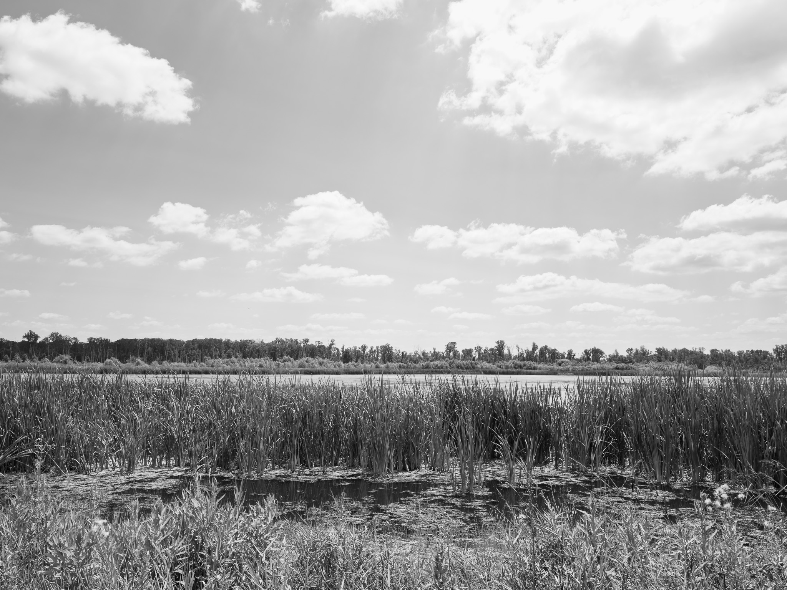
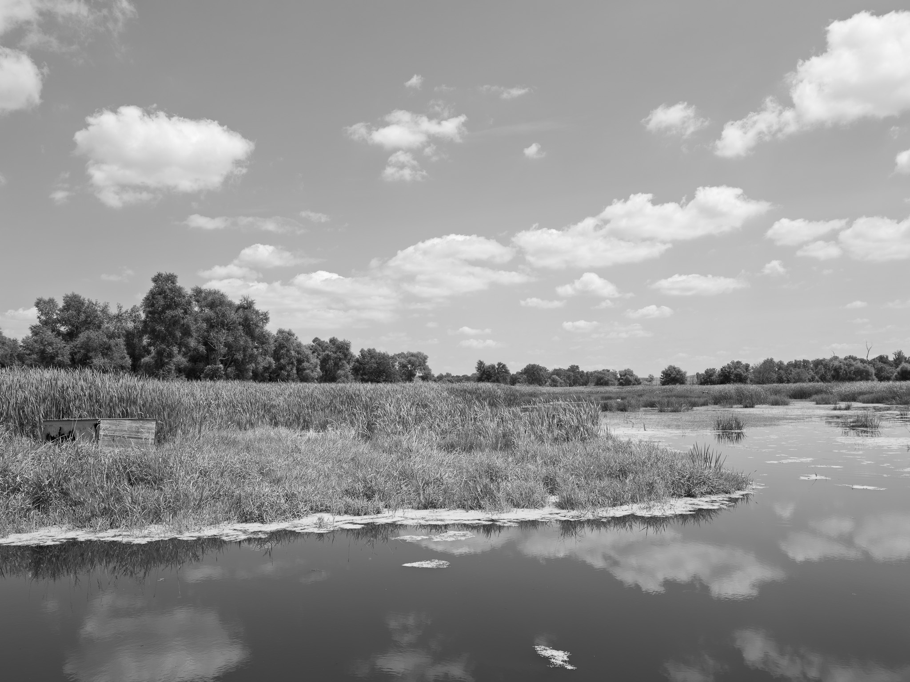
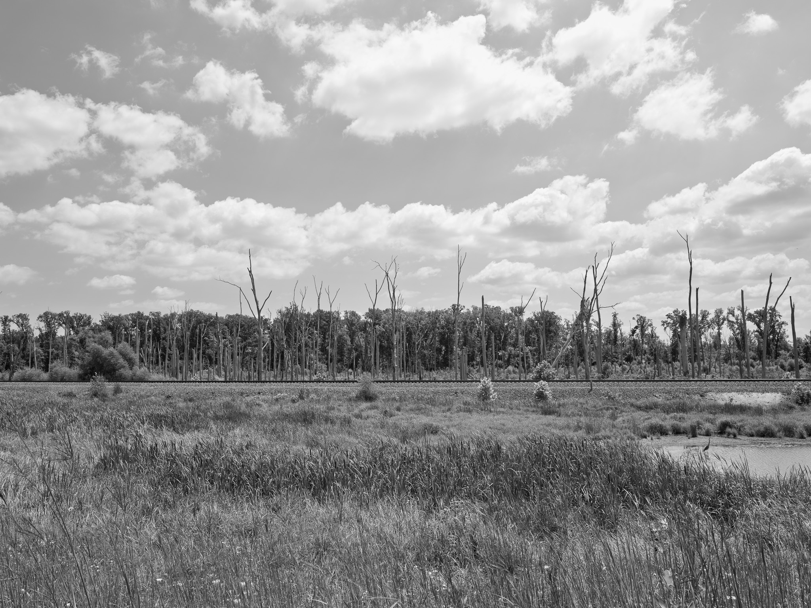
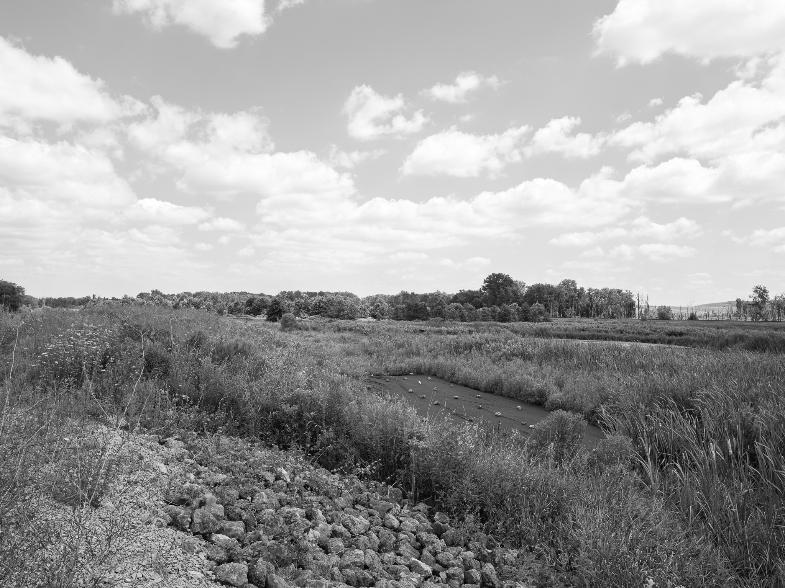
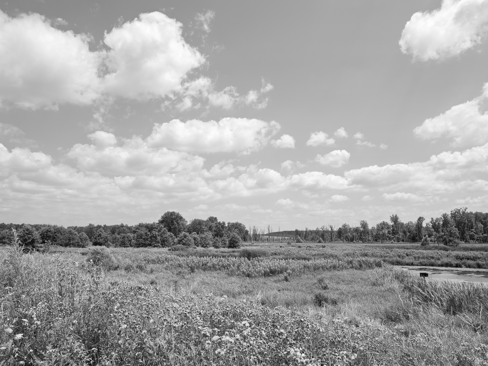

Public Lands Institute
Map
Images
Archive
About
Eagle Marsh Nature Preserve
IN

Eagle Marsh Nature Preserve 1 · 2026-08-05
_DSF3973.jpg

Eagle Marsh Nature Preserve 2 · 2026-08-05
_DSF3983.jpg

Eagle Marsh Nature Preserve 3 · 2026-08-05
_DSF3989.jpg

Eagle Marsh Nature Preserve 4 · 2026-08-05
_DSF3993.jpg

Eagle Marsh Nature Preserve 5 · 2026-08-05
_DSF3994.jpg
View all 5 images →
← Chain O'Lakes State Park
Great Smoky Mountains National Park →